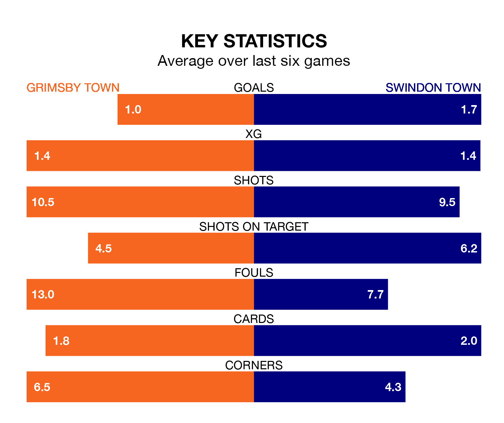

Grimsby Town host Swindon Town on Saturday at Blundell Park in EFL League Two.
In their last league match, on Tuesday, Grimsby lost to Colchester United 2-0 away.
Swindon also lost, 2-1 away at Walsall, with Paul Glatzel scoring their goals.
With 74 goals in 44 games so far this season, Swindon are scoring more than average in the league with 1.7 goals per game. But they are conceding more than average too, letting in 78 goals at a rate of 1.8 per game.
Grimsby, meanwhile, are below average scorers, with 1.2 goals per game, compared to a league average of 1.5. They have conceded 1.6 goals per game.
In the last 10 years, Grimsby and Swindon have played each other on nine occasions. Grimsby won three of them, Swindon five, and they drew once.
On average, the Mariners scored 1.1 goals and the Robins 2.1 in those matches.
Their last meeting was on September 30, when Swindon won 2-1 at home.
Grimsby Town are 21st in the table after 44 games, of which they have won 10 and drawn 16, earning 46 points.
Swindon Town are two places ahead of the Mariners in 19th, with 14 wins and 11 draws putting them on 53 points.
The home side are in mixed form in EFL League Two, with two wins and a draw from their last six games.
With three wins and three losses over that period, the Robins' form is slightly better – they have taken nine points from 18, compared to Grimsby's seven.
In Daniel Kemp, the visitors have one of the league's most on-form strikers so far this season. He has notched 17 goals in 44 appearances, to sit eighth in the scoring charts.
His goal rate of one every 196 minutes is quicker than that of Danny Rose, Grimsby's top scorer with a goal every 242 minutes, and a total of 13 goals in 37 games.
Saturday's match will be refereed by Martin Coy, who has taken charge of 10 EFL League Two games so far this season, issuing one red card and booking 50 players. He has awarded three penalties.
The last Grimsby game Coy refereed was a 2-2 away draw with Tranmere Rovers on October 7. He is yet to oversee a match featuring Swindon this season.
Updated: 15:40 (UTC), 18/04/24